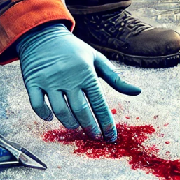
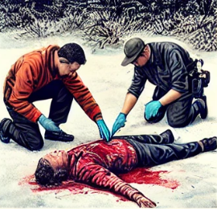
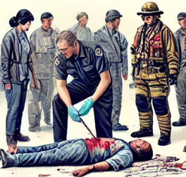
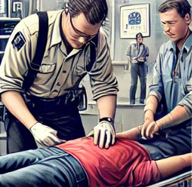
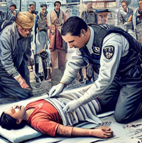

Steps to Stop Bleeding
-
CHECK the scene for safety and use personal protective equipment (PPE) like gloves to protect yourself and the injured person.
 -
If the wound is severe, CHECK for life-threatening bleeding. Look for blood-soaked clothing, pooling blood, or a spurting wound.
 -
CALL 9-1-1 immediately if the bleeding is life-threatening or cannot be controlled. Keep calm and provide information about the injury.
-
APPLY direct pressure to the wound using a clean cloth, gauze, or your hand. Press firmly to slow the bleeding.
-
If bleeding does not stop, APPLY a tourniquet above the wound if trained to do so. Tighten the tourniquet until the bleeding stops.
 -
Keep the injured person calm and monitor for signs of shock (e.g., pale skin, rapid breathing, dizziness). If possible, ELEVATE the wound above heart level to slow bleeding.
 -
Continue applying pressure and care until emergency responders arrive. Do not remove the bandage if it becomes soaked; add more layers on top.
